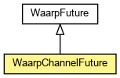

org.waarp.common.future
Class WaarpChannelFuture
java.lang.Object
 org.waarp.common.future.WaarpFuture
org.waarp.common.future.WaarpChannelFuture
org.waarp.common.future.WaarpFuture
org.waarp.common.future.WaarpChannelFuture
public class WaarpChannelFuture
- extends WaarpFuture

Future that hold a channel as result
- Author:
- Frederic Bregier
| Methods inherited from class org.waarp.common.future.WaarpFuture |
await, await, await, awaitUninterruptibly, awaitUninterruptibly, awaitUninterruptibly, cancel, getCause, isCancelled, isDone, isFailed, isSuccess, rethrowIfFailed, setFailure, setSuccess |
| Methods inherited from class java.lang.Object |
clone, equals, finalize, getClass, hashCode, notify, notifyAll, toString, wait, wait, wait |
WaarpChannelFuture
public WaarpChannelFuture()
WaarpChannelFuture
public WaarpChannelFuture(boolean cancellable)
- Parameters:
cancellable -
getChannel
public Channel getChannel()
- Returns:
- the channel as result
setChannel
public void setChannel(Channel channel)
- Parameters:
channel - the channel to set
Copyright © 2009-2013 Waarp. All Rights Reserved.